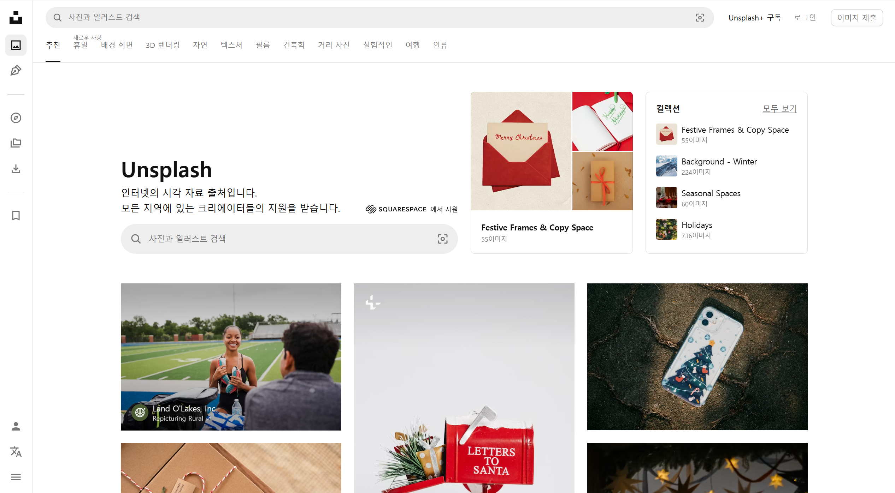
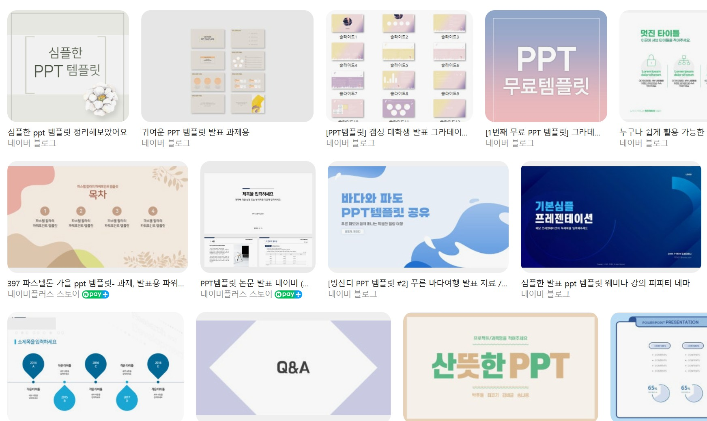
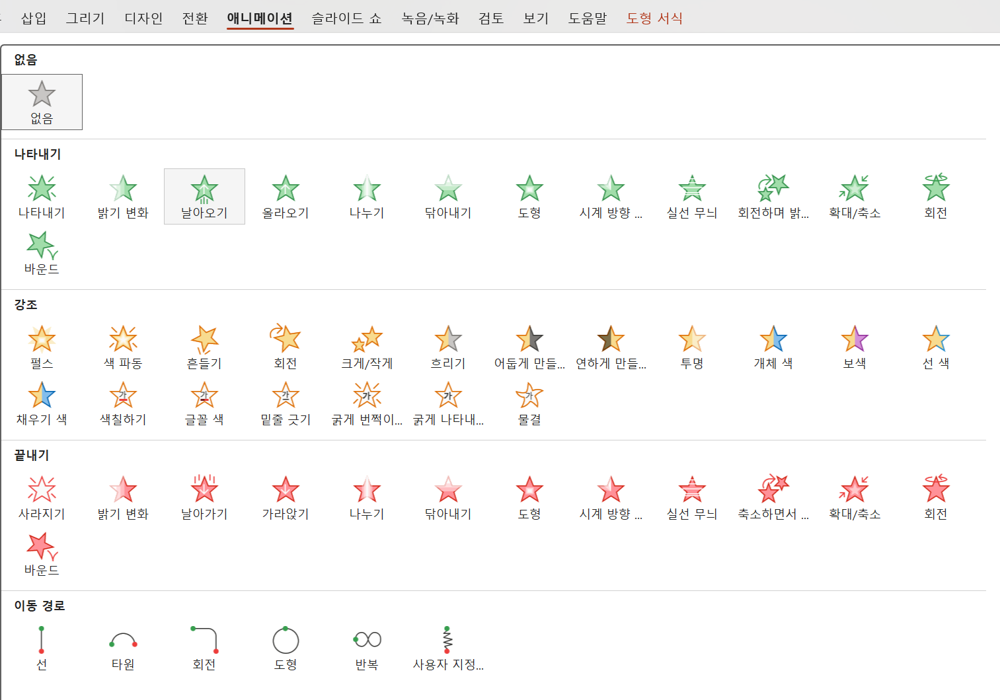
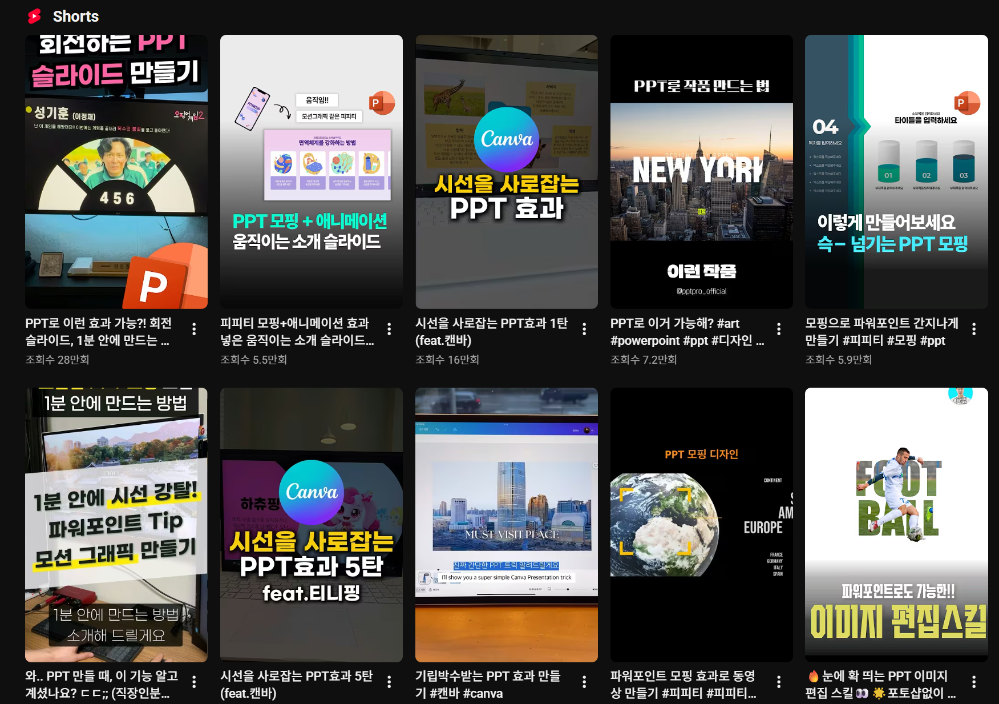

발표 자료 제작 시 많이 사용하게 되는
 Power Point
Power Point
평소 ppt를 제작할 때 자주 활용하는 방법이나 기능을 모아
해당 정보를 간단하게 소개하는 웹페이지를 제작해보았습니다.
PPT를 제작하는데 필요한 이미지를 찾거나
무언가 특별한 기능을 추가하고 싶은 사람에게 도움이 될 것 같습니다.
자세히 보고 싶은 항목을 선택해 주세요.